Crayon colors, based on common Crayola colors. Palettes build from Wikipedia
Format
list of palette::palette vectors
Details
Included palettes:
billionth, celebrates the 100 billionth crayon
color_n_smell, scented colors
colors_of_the_world, additional human colors
construction_paper, colors for construction paper
fluorescent, neon colors
gel_fx, gel colors
gem_tones, gemstones
heads_n_tails, double sided colors
magic_scent, scented colors
metallic_fx, metal colors
mini_twistables, colors, but twistable
modern, historical colors since 1990
munsell, historical colors 1926-1944
multicultural, skin colors
no_48, historical crayons 48-pack in 1949
no_64, historical crayons 64-pack in 1958
original, historical crayons original in 1903
pearl, updated perlescent colors
pearl_brite, pearlescent colors
silly_scents, scented in reality but not in R
silver_swirls, colors with a tinge of silver
standard, a large set of standard colors
standard16, colors for a 16 pack of crayons
standard24, colors for a 24 pack of crayons
standard32, colors for a 32 pack of crayons
standard64, colors for a 64 pack of crayons
star_brite, colors from 1997
Examples
plot(crayons$billionth)
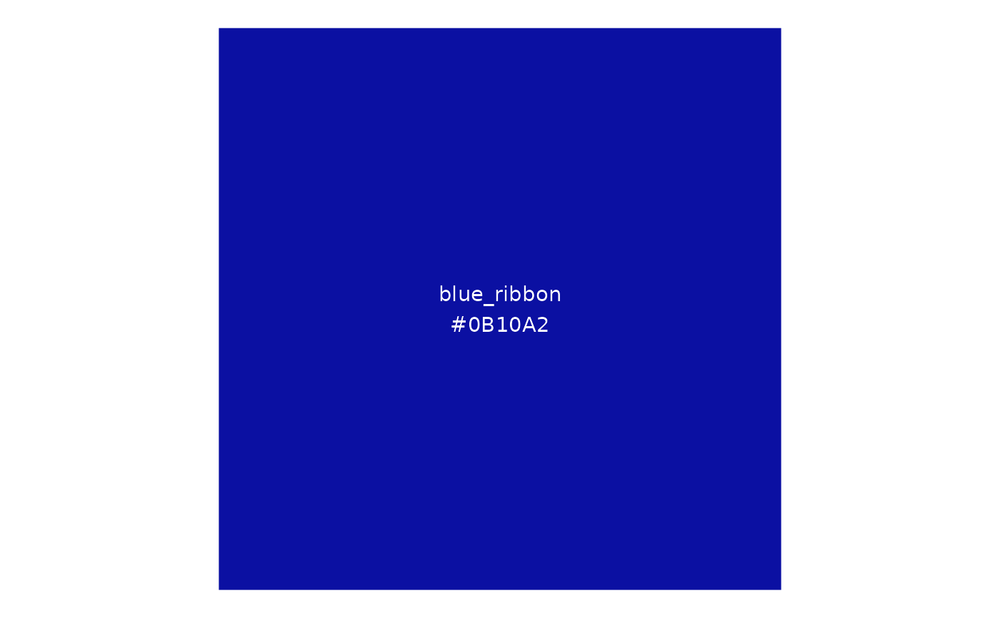
plot(crayons$color_n_smell)
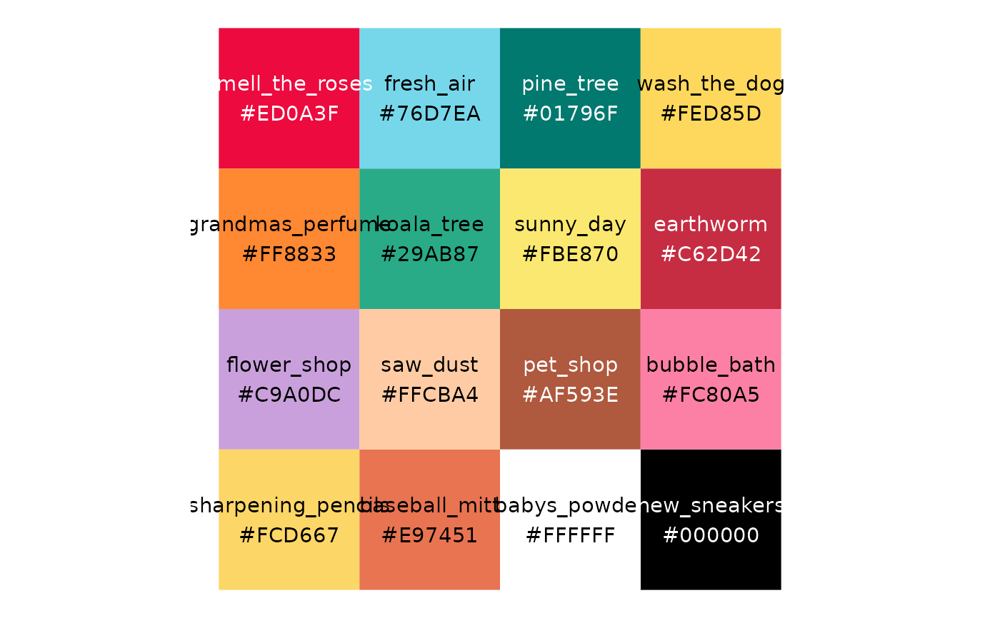
plot(crayons$colors_of_the_world)
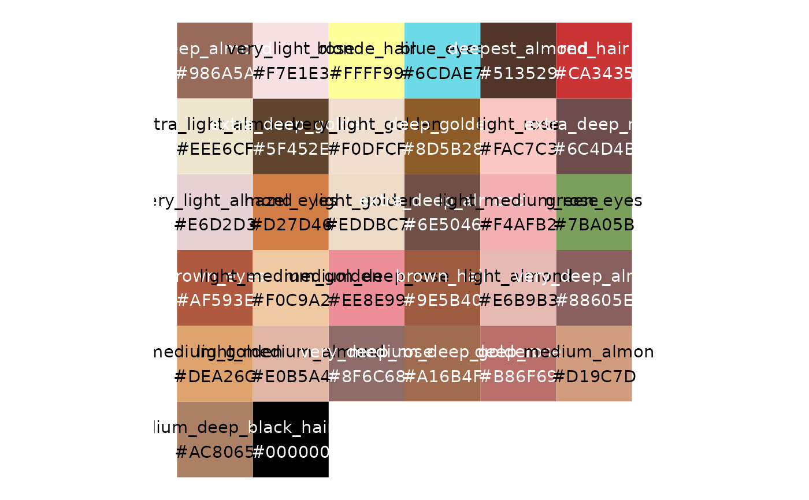
plot(crayons$construction_paper)
plot(crayons$fluorescent)
plot(crayons$gel_fx)
plot(crayons$gem_tones)
plot(crayons$heads_n_tails)
plot(crayons$magic_scent)
plot(crayons$metallic_fx)
plot(crayons$mini_twistables)
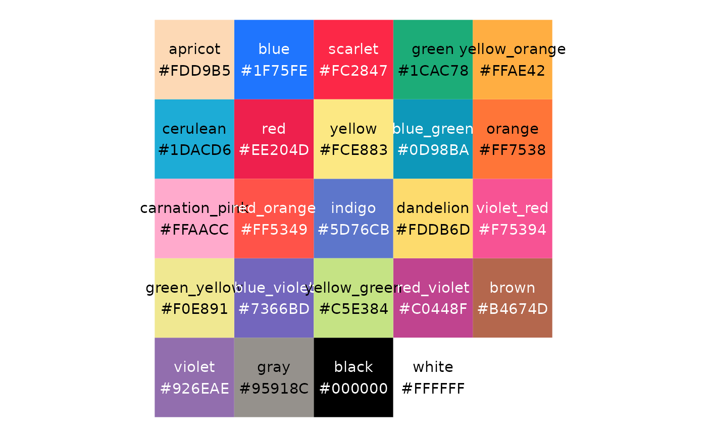
plot(crayons$modern)
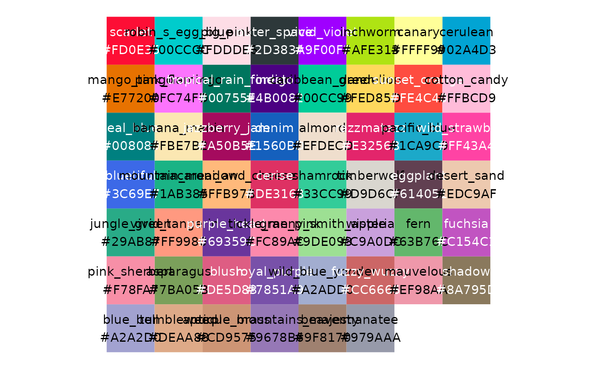
plot(crayons$munsell)
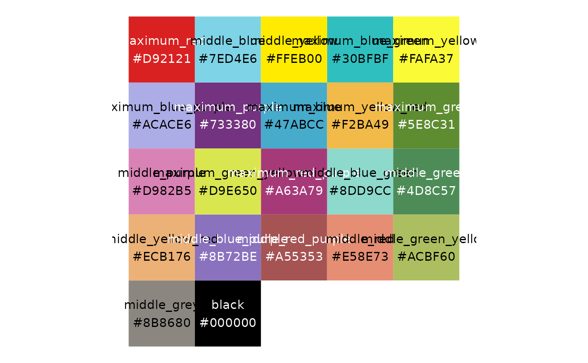
plot(crayons$multicultural)
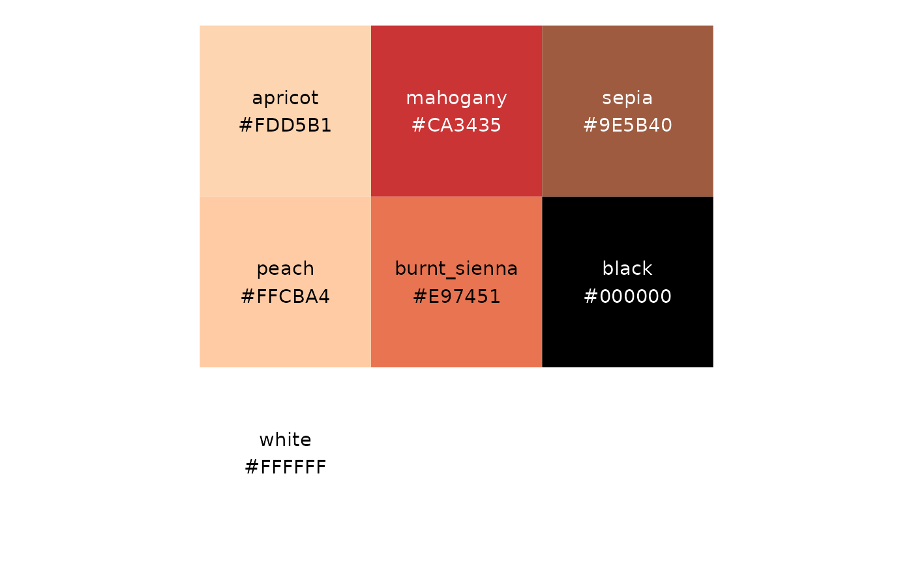
plot(crayons$no_48)
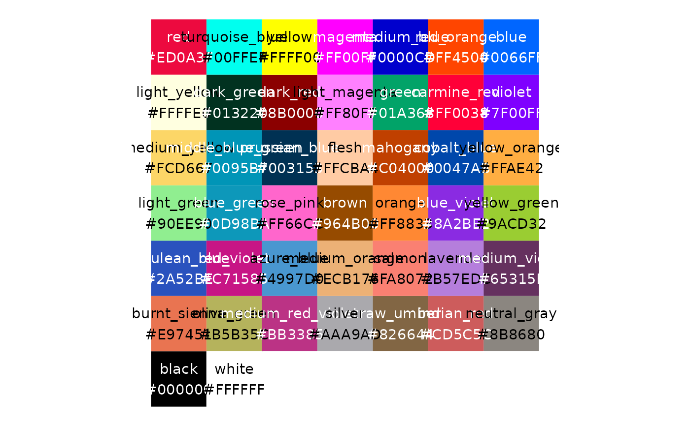
plot(crayons$no_64)
plot(crayons$original)
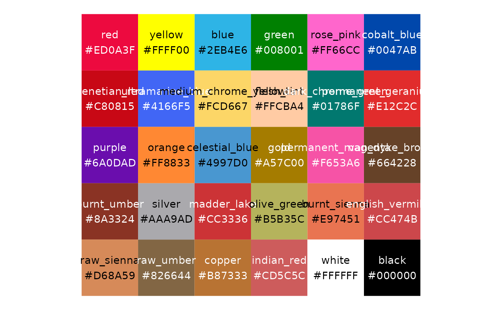
plot(crayons$pearl)
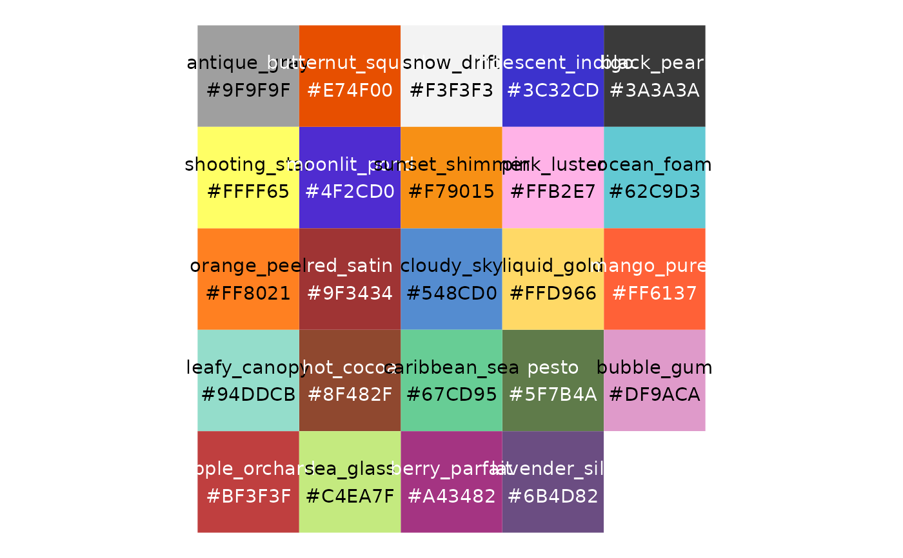
plot(crayons$pearl_brite)
plot(crayons$silly_scents)
plot(crayons$silver_swirls)
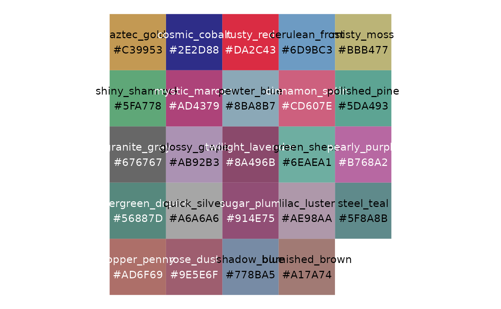
plot(crayons$standard)
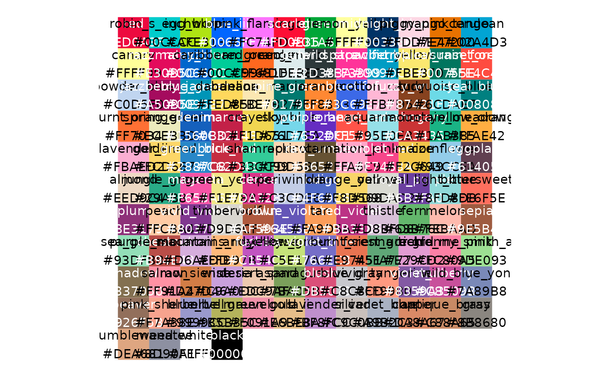
plot(crayons$standard16)
plot(crayons$standard24)
plot(crayons$standard32)
 plot(crayons$standard64)
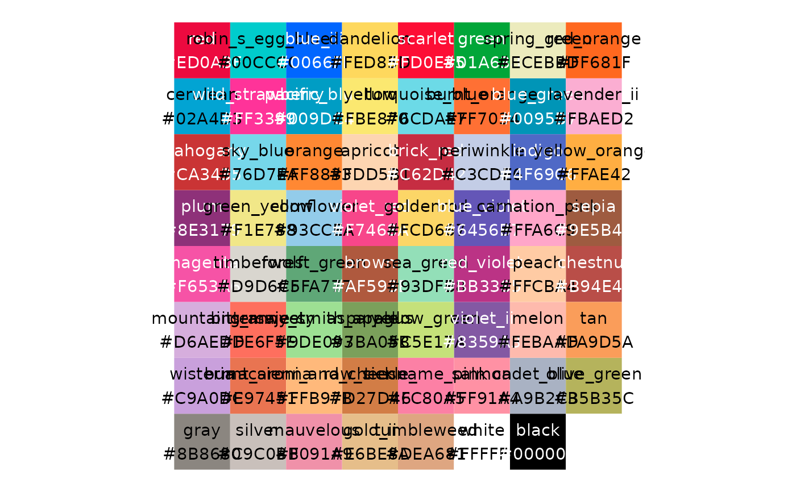
plot(crayons$star_brite)
plot(crayons$standard64)
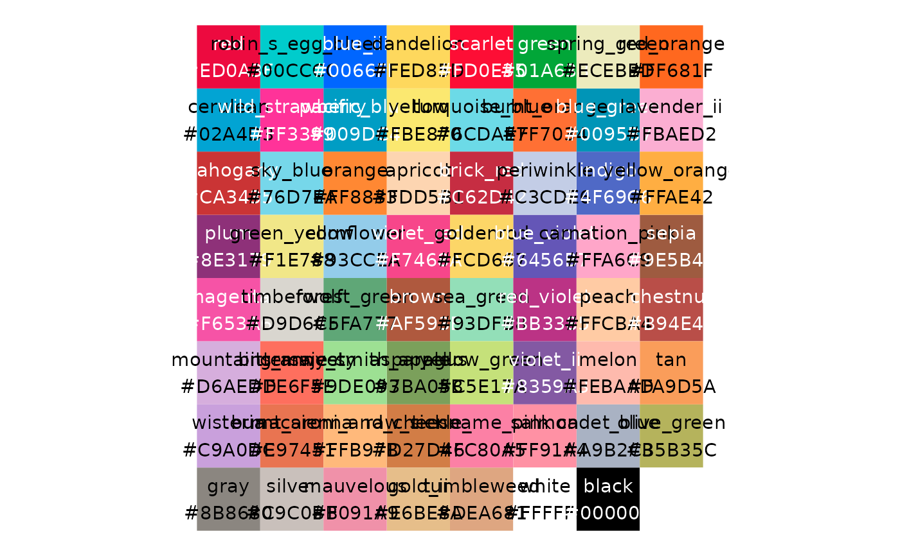
plot(crayons$star_brite)